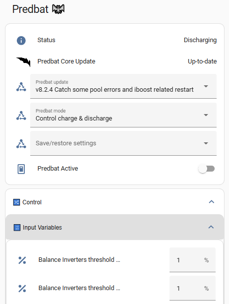

Output data
Each time Predbat runs it outputs a lot of information about the current performance of your solar/battery system and the predicted load, PV, cost, CO2, car charging, etc.
This section of the documentation explains the different output and logging data that Predbat produces and gives an overview of how to display that information within Home Assistant. There can never be a single Predbat dashboard that suits every user, so instead Predbat gives a starter-set of displays that can be adapted to your individual needs.
Web interface
NOTE: The Predbat web interface will not work with the AppDaemon or the Predbat-appdaemon installation methods.
Predbat has a Web interface active can be opened via the Predbat Add on by clicking on 'Web UI'. The web interface can be added to your sidebar by turning on the 'Show in Sidebar' toggle.
If you are not using the Predbat Add on then you may be able to access the Web Interface directly on port 5052 (e.g. with a Docker Container or Native on your Linux/MAC).
The Web interface can allow you to view the current plan, adjust the configuration, view the charts, check your apps.yaml and view the logfiles. You can change your view using the top menu bar.
Displaying output data
Each Predbat configuration item is named input_number.predbat_xxx, switch.predbat_yyy or select.predbat_zzz depending on the control type.
Creating a simple Predbat dashboard
Each time Predbat runs it auto-generates a dashboard with the filename predbat_dashboard.yaml that can be used as a starter for your own Predbat dashboard. Depending on how you installed Predbat this predbat_dashboard.yaml file will be held in one of three different directories in Home Assistant:
-
if you have used the Predbat add-on installation method, it will be in the directory
/addon_configs/6adb4f0d_predbat/, -
if the combined AppDaemon/Predbat add-on installation method was used, it's in
/addon_configs/46f69597_appdaemon-predbat/, or -
with the HACS, Appdaemon add-on then Predbat installation method, it's
/config/appdaemon/apps/batpred/config/.
You will need to use a file editor within Home Assistant (e.g. either the File editor or Studio Code Server add-on's) to open the predbat_dashboard.yaml file - see editing configuration files within Home Assistant if you need to install an editor.
Once opened, select and copy all the contents of the predbat_dashboard.yaml file and add the contents into a new dashboard page:
-
Go to System/Dashboards, click 'Open' against an existing dashboard or 'Add Dashboard'/'New dashboard from scratch'/enter a name/click Create, then click 'Open'
-
Click the pencil icon in the top right corner, click the blue 'Add card', scroll down the list of cards to the bottom and click 'Manual', delete the template card configuration and paste the contents of the predbat_dashboard.yaml file copied earlier, then 'Save'.
This will give you a simple Predbat control and output dashboard that you can then resequence and customise as you wish.

Creating a compact Predbat control dashboard
You can also create a dashboard page that's dynamically generated to automatically include all the Predbat control and output entities, so when new entities are added in future Predbat releases, you don't have to edit the dashboard.
Firstly you need to install HACS if it isn't already installed, and then install two HACS front end components:
- Auto Entities (https://github.com/thomasloven/lovelace-auto-entities) automatically generates a list of entities that match a wildcard expression
- Lovelace Collapsable Cards (https://github.com/RossMcMillan92/lovelace-collapsable-cards) wraps the entity lists within a drop-down toggle
Installation steps:
- Click the HACS icon on the left-hand side panel
- Click 'Frontend'
- Click the three dots in the top right corner then 'Custom Repositories'
- Paste (or type) in the following repository name
https://github.com/RossMcMillan92/lovelace-collapsable-cards, choose Category of 'Lovelace', and click Add - Close the Custom repositories dialogue
- Click 'Explore & Download Repositories'
- Search for 'collapsable cards', click the name of it, check it's the right one, click 'Download', 'Download' again, then 'Reload'
- Click 'Explore & Download Repositories' again, search for 'auto-entities', then 'Download', 'Download', 'Reload'
Now create the dynamic dashboard:
- Go to Settings/Dashboards, click 'Open' against an existing dashboard or 'Add Dashboard'/'New dashboard from scratch'/enter a name/click Create, then click 'Open'
- Click the pencil icon in the top right corner, then the plus symbol on the far right of the next row to create a new View
- Enter a title of the View, then Save
- Click the blue 'Add card', scroll down the list of cards to the bottom and click 'Manual', delete the template card configuration and copy/paste the following YAML into the dashboard and click 'Save':
type: vertical-stack
title: Predbat 🦇
cards:
- type: entities
entities:
- entity: predbat.status
- entity: update.predbat_version
- entity: select.predbat_update
- entity: select.predbat_mode
- entity: select.predbat_saverestore
- entity: switch.predbat_active
- type: custom:collapsable-cards
title: 🔀 Control
defaultOpen: false
cards:
- type: custom:collapsable-cards
title: 🔢 Input Variables
defaultOpen: false
cards:
- type: custom:auto-entities
card:
type: entities
filter:
include:
- entity_id: input_number.predbat*
exclude: []
unique: true
sort:
method: friendly_name
numeric: false
- type: custom:collapsable-cards
title: 🔀 Switches
defaultOpen: false
cards:
- type: custom:auto-entities
card:
type: entities
filter:
include:
- entity_id: switch.predbat*
exclude: []
unique: true
sort:
method: friendly_name
numeric: false
- type: custom:collapsable-cards
title: 🔢 Selectors
defaultOpen: false
cards:
- type: custom:auto-entities
card:
type: entities
filter:
include:
- entity_id: select.predbat*
exclude: []
unique: true
sort:
method: friendly_name
numeric: false
- type: custom:collapsable-cards
title: '#️⃣ Sensors'
defaultOpen: false
cards:
- type: custom:collapsable-cards
title: 💷 Cost Sensors
defaultOpen: false
cards:
- type: custom:auto-entities
card:
type: entities
filter:
include:
- entity_id: predbat.*cost*
- entity_id: predbat.*rate*
- entity_id: predbat.*metric*
exclude:
- entity_id: predbat.*start*
- entity_id: predbat.*end*
- entity_id: predbat.*duration*
unique: true
sort:
method: friendly_name
numeric: false
- type: custom:collapsable-cards
title: 💷 Saving Sensors
defaultOpen: false
cards:
- type: custom:auto-entities
card:
type: entities
filter:
include:
- entity_id: predbat.*saving*
exclude:
- entity_id: predbat.*start*
- entity_id: predbat.*end*
- entity_id: predbat.*duration*
unique: true
sort:
method: friendly_name
numeric: false
- type: custom:collapsable-cards
title: 🕛 Time/Duration Sensors
defaultOpen: false
cards:
- type: custom:auto-entities
card:
type: entities
filter:
include:
- entity_id: predbat.*start*
- entity_id: predbat.*end*
- entity_id: predbat.*duration*
- entity_id: predbat.*record*
exclude: []
unique: true
sort:
method: friendly_name
numeric: false
- type: custom:collapsable-cards
title: ⚡ Power Sensors
defaultOpen: false
cards:
- type: custom:auto-entities
card:
type: entities
filter:
include:
- entity_id: predbat.*soc*
- entity_id: predbat.*energy*
- entity_id: predbat.*load*
- entity_id: predbat.*battery*
- entity_id: predbat.*kw*
- entity_id: predbat.*power*
- entity_id: predbat.*charge*
- entity_id: predbat.*iboost*
- entity_id: predbat.*grid*
- entity_id: sensor.predbat_pv*
exclude:
- entity_id: predbat.*savings*
- entity_id: predbat.*start*
- entity_id: predbat.*end*
- entity_id: predbat.*duration*
- entity_id: predbat.*record*
unique: true
sort:
method: friendly_name
numeric: false
- type: custom:collapsable-cards
title: 1️⃣ Binary Sensors
defaultOpen: false
cards:
- type: custom:auto-entities
card:
type: entities
filter:
include:
- entity_id: binary_sensor.predbat*
exclude: []
unique: true
sort:
method: friendly_name
numeric: false
This will give you a compact dynamically created list of all Predbat entities which groups the entities by type and is collapsed by default to prevent screen clutter.

Credit @DJBenson for the code.
Viewing the Predbat plan
The Predbat Plan card is very useful for seeing the plan that Predbat has created - Create the Predbat Plan card.
Graphing the Predbat predictions
A set of Apex Charts can also be created to see graphically what Predbat plans to do - Creating the charts.
Basic status
-
switch.predbat_active - Automatically set by Predbat to On when Predbat is busy calculating or controlling your inverter, or Off when Predbat is waiting for the next time it needs to perform a plan calculation update. If you toggle this switch in Home Assistant it will force Predbat to perform an update now (useful for automations).
-
predbat.status - Gives the current status & errors and logs any changes that Predbat makes to your inverter. The different Predbat status values and their meanings are detailed in what does Predbat do.
predbat.status additionally has the following attributes that are automatically populated:
- Last updated - date and time that Predbat last updated the plan
- Debug - A set of arrays containing Predbat's planned charging and discharging time windows and battery limits (in kWh)
- Version - version of Predbat that's running
- Error - binary value true or false depending upon whether Predbat is in an error status or nor
Baseline data
What your battery is expected to do over the forecast_hours duration of the plan with no changes made by Predbat:
NB: Predbat forecasts are from 'now' to the forecast_hours duration (set in apps.yaml) into the future and shouldn't be confused with 'today' figures. e.g. predbat.pv_energy is the predicted PV energy for today and forecast_hours (typically 48) ahead so will be much larger than sensor.solcast_pv_forecast_today which is today's Solcast PV forecast.
- predbat.battery_hours_left - The number of hours left until your home battery is predicted to run out (stops at the maximum prediction time)
- predbat.charge_limit - The current charge limit used for the scenario in %
- predbat.charge_limit_kw - The current charge limit used for the scenario in kWh
- predbat.duration - The duration of the prediction maximum in hours
- predbat.load_energy - Predicted load energy in kWh
- predbat.pv_energy - Predicted PV energy in kWh
- predbat.export_energy - Predicted export energy in kWh
- predbat.import_energy - Predicted import energy in kWh
- predbat.import_energy_battery - Predicted import energy to charge your home battery in kWh
- predbat.import_energy_house - Predicted import energy not provided by your home battery (flat battery or above maximum discharge rate)
- predbat.soc_kw - Predicted state of charge (in kWh) at the end of the prediction, not very useful in itself, but holds all minute by minute prediction data (in attributes) which can be charted with Apex Charts (or similar)
- predbat.soc_min_kwh - The minimum battery level during the time period in kWh
- predbat.metric - Predicted cost metric for the next simulated period (in pence). Also contains data for charting cost in the entity attributes
- predbat.battery_power - Predicted battery power per minute, for charting
- predbat.battery_cycle - Predicted battery cycle in kWh (total kWh processed)
- predbat.pv_power - Predicted PV power per minute, for charting
- predbat.grid_power - Predicted Grid power per minute, for charting
- predbat.car_soc - The expected charge level of your car at the end of the plan. Can also be charted
- input_number.predbat_iboost_today - Gives the amount of energy modelled that will be sent to the solar diverter today, increments during the day and is reset to zero at 11:30pm each night
PV 10% baseline data
The calculated baseline results under PV 10% scenario for the forecast_hours duration of the plan:
- predbat.soc_kw_base10 - As soc_kw but using the 10% solar forecast, also holds minute by minute data (in attributes) to be charted
- predbat.base10_pv_energy - Predicted PV 10% energy in kWh
- predbat.base10_metric - Predicted cost for PV 10%
- predbat.base10_export_energy- Predicted export energy for PV 10%
- predbat.base10_load_energy - Predicted load energy for PV 10%
- predbat.base10_import_energy- Predicted import energy for PV 10%
Best
Predbat outputs the following 'best' entities from the forecast (for the forecast_hours duration) based on the lowest cost consumption plan:
- predbat.best_battery_hours_left - Number of hours left under best plan
- predbat.best_export_energy - Predicted exports under best plan
- predbat_best_import_energy - Predicted imports under best plan
- predbat_best_load - Predicted best load energy
- predbat.best_pv_energy - Predicted Best PV energy in kWh
- predbat_best_import_energy_battery - Predicted imports to the battery under best SoC setting
- predbat_best_import_energy_house - Predicted imports to the house under best SoC setting
- predbat_soc_kw_best - Predicted best final state of charge (in kWh), holds minute by minute prediction data (in attributes) to be charted
- predbat.soc_kw_best_h1 - Single data point for the predicted state of charge in 1 hours time (useful for calibration charts, predicted vs actual)
- predbat.soc_kw_best_h8 - Single data point for the predicted state of charge in 8 hours time (useful for calibration charts, predicted vs actual)
- predbat.soc_kw_best_h12 - Single data point for the predicted state of charge in 12 hours time (useful for calibration charts, predicted vs actual)
- predbat_best_metric - The predicted cost if the proposed SoC % charge target is selected. Also contains data for charting cost in attributes
- predbat.best_charge_limit - Predicted best battery charge limit in percent
- predbat.best_charge_limit_kw - Predicted best battery charge limit in kWh
- predbat.best_discharge_limit - Predicted best battery discharge limit in percent (will be 0% when discharging or 100% when not)
- predbat.best_discharge_limit_kw - Predicted best battery discharge limit in kWh
- predbat.battery_power_best - Predicted best battery power per minute, for charting
- predbat.battery_cycle_best - Predicted best battery cycle in kWh (total kWh processed)
- predbat.pv_power_best - Predicted best PV power per minute, for charting
- predbat.grid_power - Predicted best Grid power per minute, for charting
- predbat.car_soc_best - The expected charge level of your car in best plan at the end of the plan using the proposed SoC%/Window. Can also be charted
- predbat.iboost_best - Gives the predicted energy going into the iBoost solar diverter
Best PV 10%
The calculated best results under the PV 10% scenario for the forecast_hours duration:
- predbat.soc_kw_best10 - As soc_kw_best but using the 10% solar forecast, also holds minute by minute data (in attributes) to be charted
- predbat.best10_pv_energy - Predicted best PV 10% energy in kWh
- predbat.best10_metric - Predicted best cost for PV 10%
- predbat.best10_export_energy- Predicted best export energy for PV 10%
- predbat.best10_load_energy - Predicted best load energy for PV 10%
- predbat.best10_import_energy- Predicted best import energy for PV 10%
Battery status
The following sensors are set based upon what Predbat is currently controlling the battery to do:
- binary_sensor.predbat_charging - Set to 'on' when Predbat is force charging the battery (from solar, or if that is insufficient, from grid import), or 'off' otherwise
- binary_sensor.predbat_discharging - Set to 'on' when Predbat is force discharging the battery for export income, 'off' otherwise. Useful for automations if for example you want to turn off car charging when the battery is being exported
Energy rate data
Low import rate entities
- predbat.low_rate_cost - The lowest import rate cost in Pence
- predbat.low_rate_start - Start time of the next low import rate slot
- predbat.low_rate_end - End time of the next low import rate slot
- predbat.low_rate_cost_2, predbat.low_rate_start_2, predbat.low_rate_end_2 - The following low import rate slot
- binary_sensor.predbat_low_rate_slot - A sensor that is 'on' to indicate when there is a low energy rate slot active, 'off' otherwise
High export rate entities
- predbat.high_export_rate_cost - The highest export rate cost in Pence
- predbat.high_export_rate_start - Start time of the next high export rate slot
- predbat.high_export_rate_end - End time of the next high export rate slot
- predbat.high_export_rate_cost_2, predbat.high_export_rate_start_2, predbat.high_export_rate_end_2 - The following high export rate slot
- binary_sensor.predbat_high_export_rate_slot - A sensor that is 'on' to indicate when there is a high export rate slot active, 'off' otherwise
Other rate entities
- predbat.rates - The current energy rates in Pence (also can be charted)
- predbat.rates_export - The current energy export rates in Pence (also can be charted)
- predbat.cost_today - The total cost of energy so far today (since midnight)
Car data
- binary_sensor.predbat_car_charging_slot - A binary sensor indicating when to charge your car (if car planning is enabled) - which can be used in an automation as described in Predbat led car charging
- predbat.car_charging_start - The time that car charging is planned to start at, in HH:MM:SS format
iBoost Solar Diverter data
- binary_sensor.predbat_iboost_active - A binary sensor indicating when there is excess solar and the solar diverter (e.g. iBoost, Eddi or just plain immersion heater) should be active, can be used for automations to trigger the immersion heater boost
Energy saving data
- predbat.cost_yesterday - A sensor that gives you your energy costs for yesterday (00:00-23:59 on the previous day)
- predbat.savings_yesterday_predbat - A sensor which tells you have much money Predbat saved you yesterday compared to not using Predbat and only charging at the lowest import rate in the 24 hour Period
- predbat.savings_total_predbat - A running total of the above
- predbat.savings_yesterday_pvbat - A sensor which tells you have much money you saved vs not having a PV and battery system at all (this includes in the Predbat savings)
- predbat.savings_total_pvbat - A running total of the above
Solar forecast data
- sensor.predbat_pv_today - Tracks the PV forecast for today, attributes give the remaining amount today and the half hourly data
- sensor.predbat_pv_tomorrow - Tracks the PV forecast for tomorrow, attributes give the remaining amount today and the half hourly data
Predbat Logfile
Predbat writes detailed logging, status and progress activity information to a logfile as it runs and so this file should be checked if predbat.status reports an error, or if you want to verify that Predbat is running OK.
There is a lot of output in the logfile, this is normal!
Depending on how you installed Predbat the logfile will be held in one of three different directories in Home Assistant and the filename varies slightly:
-
if you have used the Predbat add-on installation method, the logfile will be
/addon_configs/6adb4f0d_predbat/predbat.log, -
if the combined AppDaemon/Predbat add-on installation method was used, it's
/addon_configs/46f69597_appdaemon-predbat/predbat.log, or -
with the HACS, Appdaemon add-on then Predbat installation method, it's
/homeassistant/appdaemon/appdaemon.log.
You will need to use a file editor within Home Assistant (e.g. either the File editor or Studio Code Server add-on's) to view Predbat's logfile - see editing configuration files within Home Assistant if you need to install an editor.
Automated monitoring that Predbat and GivTCP are running OK
With GivTCP and Predbat performing an important function, managing your battery charging and discharging to best reduce your electricity bills, you may find these automations useful to monitor that GivTCP and Predbat are running OK, and if not, to raise an alert on your mobile device running the Home Assistant Companion app.
To create a new automation:
- Settings / Automations & Scenes
- Create Automation / Create new Automation
- Three dots (top right corner) / Edit in YAML
- Delete the existing (template) automation code and copy/paste the supplied automation code below
GivTCP activity monitor
This automation will raise an alert if any of the following occur:
- The inverter goes offline for more than 15 minutes
- No last_updated_time received from the inverter for more than 15 minutes
- Inverter temperature less than 5 degrees for more than 15 minutes (should never happen)
- The battery goes offline to the inverter for more than 15 minutes
- GivTCP add-on is not running
- Mosquitto broker add-on is not running
- Predbat/AppDaemon-predbat or AppDaemon add-on (as appropriate) is not running
The script will need to be customised for your inverter id, battery id and mobile details, and can be extended for multiple inverters and batteries by duplicating the triggers and adding appropriate battery and inverter id's.
alias: GivTCP activity monitor
description: Alert when communications to GivTCP have ceased for 15 minutes
trigger:
- platform: state
entity_id: sensor.givtcp_<inverter id>_last_updated_time
to: "null"
for:
minutes: 15
variables:
alert_text: No GivTCP update received from inverter <id>
restart_app: GivTCP
- platform: state
entity_id:
- sensor.givtcp_<inverter id>_status
from: online
for:
minutes: 15
variables:
alert_text: No GivTCP update received from inverter <id>
restart_app: GivTCP
- platform: numeric_state
entity_id:
- sensor.givtcp_<inverter id>_invertor_temperature
for:
minutes: 15
below: 10
variables:
alert_text: No GivTCP update received from inverter <id>
restart_app: GivTCP
- platform: state
entity_id:
- sensor.givtcp_<battery id>_battery_cells
to: unknown
for:
minutes: 15
variables:
alert_text: Battery <battery_id> is offline to GivTCP
restart_app: GivTCP
- platform: state
entity_id:
- binary_sensor.givtcp_running
to: "off"
for:
minutes: 15
variables:
alert_text: GivTCP add-on is not running
restart_app: GivTCP
- platform: state
entity_id:
- binary_sensor.mosquitto_broker_running
to: "off"
for:
minutes: 15
variables:
alert_text: Mosquitto Broker add-on is not running
restart_app: Mosquitto
- platform: state
entity_id:
- binary_sensor.<appdaemon><-predbat>_running
to: "off"
for:
minutes: 15
variables:
alert_text: <AppDaemon><-predbat> add-on is not running
restart_app: Predbat
action:
- service: notify.mobile_app_<your mobile device id>
data:
title: GivTCP communication issue
message: |
{{now().strftime('%-d %b %H:%M')}} ISSUE:
{{ alert_text }} for the past 15 minutes, restarting
{{ restart_app }}
data:
visibility: public
persistent: true
push:
sound:
name: default
critical: 1
volume: 0.8
sticky: true
color: red
- choose:
- conditions:
- condition: template
value_template: "{{ restart_app == 'GivTCP' }}"
sequence:
- alias: Restart GivTCP add-on
action: hassio.addon_restart
data:
addon: 533ea71a_givtcp
- conditions:
- condition: template
value_template: "{{ restart_app == 'Mosquitto' }}"
sequence:
- alias: Restart Mosquitto add-on
action: hassio.addon_restart
data:
addon: core_mosquitto
- conditions:
- condition: template
value_template: "{{ restart_app == 'Predbat' }}"
sequence:
- alias: Restart Predbat add-on
action: hassio.addon_restart
data:
addon: a06adb4f0d_predbat
mode: single
The last three triggers (GivTCP, Mosquitto and Predbat/AppDaemon running) trigger if any of these add-ons that Predbat is dependent upon are not running. You will need to enable a binary sensor for each add-on to be able to use these triggers in the automation:
- Navigate to Settings / Devices and Services / Devices and search for 'GivTCP'
- Click on the GivTCP add-on, and under 'Sensors', click 'XX entities not shown'
- Click the 'Running' sensor, then the cogwheel, and Enable the sensor
Repeat these steps for the 'Mosquitto' add-on and either 'Predbat', 'AppDaemon' or 'AppDaemon-predbat' depending on which Predbat install option you followed.
As an extension to the above, if you don't want the automation to restart the failing add-on and instead just send an alert that there is a problem, delete the 'choose' code above. Restarting GivTCP does however lose the current GivTCP log in Home Assistant.
NB: If you are using GivTCP v2 rather than v3, replace the '533ea71a_givtcp' with 'a6a2857d_givtcp'; and if you are using AppDaemon rather than the Predbat add-on, replace '6adb4f0d_predbat' with 'a0d7b954_appdaemon'.
Predbat error monitor
This automation will raise an alert if Predbat's status turns to Error for more than 5 minutes.
In normal operation Predbat will automatically run and update its forecast every 5 minutes. If the automation detects that Predbat has not done this for 20 minutes, then an alert will be raised and the automation will restart the Predbat add-on to try to resolve a 'hung Predbat' issue.
The script will need to be customised for your mobile details.
alias: Predbat error monitor
description: Alert when Predbat has raised an exception
trigger:
- platform: template
alias: Predbat status contains 'Error' for 5 minutes
value_template: "{{ 'Error' in states('predbat.status') }}"
for:
minutes: 5
variables:
alert_text: >-
predbat status is {{ states('predbat.status') }}, error={{
state_attr('predbat.status', 'error') }}
- platform: state
alias: Predbat is in error status for 5 minutes
entity_id: predbat.status
attribute: error
to: "true"
for:
minutes: 5
variables:
alert_text: >-
predbat status is {{ states('predbat.status') }}, error={{
state_attr('predbat.status', 'error') }}
- platform: state
alias: Predbat status.last_updated has not changed for 20 minutes
entity_id: predbat.status
attribute: last_updated
for:
minutes: 20
variables:
alert_text: >-
Predbat stalled? Restarting. last_updated=' {{
state_attr('predbat.status','last_updated')|as_timestamp|timestamp_custom('%a
%H:%M') }}', unchanged for 20 mins; Status='{{ states('predbat.status')
}}'
restart_predbat: "Y"
action:
- service: notify.mobile_app_<your mobile device id>
data:
title: Predbat status issue
message: |
{{now().strftime('%-d %b %H:%M')}} ISSUE:
{{ alert_text }}
data:
visibility: public
persistent: true
push:
sound:
name: default
critical: 1
volume: 0.8
sticky: true
color: red
- if:
- condition: template
value_template: "{{ restart_predbat == 'Y' }}"
then:
- action: hassio.addon_restart
data:
addon: 6adb4f0d_predbat
alias: Restart Predbat add-on
mode: single
NB: If you are using AppDaemon rather than the Predbat add-on, replace '6adb4f0d_predbat' with 'a0d7b954_appdaemon'.
An error alert looks like this: